Simulations with spiked P. dis strain analysed using Sylph Query
2026-04-15
Load data and prepare for testing
library(strainspy)
# Queries
d_q99 <- read_sylph("p_distasonis_sims/pdis_q99.tsv")## Detected Sylph query output file.# spiked samples
ss = readLines("p_distasonis_sims/spike_genome_ids.txt") # These are the baseline samples, not spiked
ss_spikes = c(paste(ss, "_sx1", sep = ""), paste(ss, "_sx3", sep = ""), paste(ss, "_sx5", sep = "")) # These are the spikes
# Remove _1 annoyance
colnames(d_q99) = sub("_1", "", colnames(d_q99))
d_q99@colData$Sample_file = sub("_1", "", colnames(d_q99))
# add the metadata
d_q99 = strainspy:::modify_metadata(se = d_q99, meta_data = data.frame(run_accession = colnames(d_q99),
spiked = as.factor(sapply(colnames(d_q99), function(x) x%in% c(ss, ss_spikes)))))
# I am marking the baseline unspiked ones as spiked to show the null doesn't detect anything
d_q99 <- filter_by_presence(d_q99, min_nonzero = 25)## Retained 16081 rows after filtering# taxonomies
tax_99 = read_taxonomy("data/TAXONOMY/sylph_DB_taxonomy_99.tsv")
design <- as.formula(" ~ spiked")Fit ZIB model
query 99, baseline (no signal)
# This simulation does not have any signal, we shouldn't detect anything!
# Subset
dim(d_q99)## [1] 16081 160rm_idx = grep("_sx", colnames(d_q99))
d_q99_test = d_q99[,-rm_idx]
dim(d_q99_test)## [1] 16081 100# These TRUE = 20 are NOT spiked in, this is just to show there is no detectable signal
table(d_q99_test@colData$spiked) ##
## FALSE TRUE
## 80 20save_path = "output_rds/spike_pdis_zib_q_99_bl.rds"
if(file.exists(save_path)){
fit_zib_99_bl <- readRDS(save_path)
} else {
system.time({
ebp = compute_eb_priors(d_q99_test, design, nthreads = parallel::detectCores())
fit_zib_99_bl <- glmZiBFit(d_q99_test, design, nthreads = parallel::detectCores(), MAP_prior = ebp)
})
saveRDS(fit_zib_99_bl, save_path)
}
top_hits(fit_zib_99_bl) # no hits as expected## Warning in top_hits(fit_zib_99_bl): Multiple testing correction using `holm`:
## No significant associations detected for coef = 2 at alpha = 0.050000
## # A tibble: 0 × 10
## # ℹ 10 variables: Contig_name <chr>, Genome_file <chr>, coefficient <dbl>,
## # std_error <dbl>, p_value <dbl>, p_adjust <dbl>, zi_coefficient <dbl>,
## # zi_std_error <dbl>, zi_p_value <dbl>, zi_p_adjust <dbl>query 99, cov1x
# baseline false samples and higher coverage ones
rm_idx = c(sapply(ss, function(x) which(colnames(d_q99) %in% x)), grep("_sx3", colnames(d_q99)), grep("_sx5", colnames(d_q99)))
d_q99_test = d_q99[,-rm_idx]
dim(d_q99_test)## [1] 16081 100# These 20 are spiked ata coverage of 1x
table(d_q99_test@colData$spiked) ##
## FALSE TRUE
## 80 20save_path = "output_rds/spike_pdis_zib_q_99_cov1x.rds"
if(file.exists(save_path)){
fit_zib_99_c1 <- readRDS(save_path)
} else {
system.time({
ebp = compute_eb_priors(d_q99_test, design, nthreads = parallel::detectCores())
fit_zib_99_c1 <- glmZiBFit(d_q99_test, design, nthreads = parallel::detectCores(), MAP_prior = ebp)
})
saveRDS(fit_zib_99_c1, save_path)
}
th_c1 = strainspy:::add_tax2tophits(top_hits(fit_zib_99_c1), tax_99)## Found 76 tophits for spikedTRUE at alpha = 0.05 using holm# All 76 hits from the same species
table(th_c1$Species)##
## Parabacteroides distasonis Parabacteroides distasonis_A
## 55 21plot_manhattan(fit_zib_99_c1, taxonomy = tax_99, method = "BH", tax_levels = c("Order", "Phylum", "Genus", "Species"))## ! # Invaild edge matrix for <phylo>. A <tbl_df> is returned.
## ! # Invaild edge matrix for <phylo>. A <tbl_df> is returned.
## ! # Invaild edge matrix for <phylo>. A <tbl_df> is returned.
## ! # Invaild edge matrix for <phylo>. A <tbl_df> is returned.
## Warning: Using `size` aesthetic for lines was deprecated in ggplot2 3.4.0.
## ℹ Please use `linewidth` instead.
## ℹ The deprecated feature was likely used in the strainspy package.
## Please report the issue to the authors.
## This warning is displayed once per session.
## Call `lifecycle::last_lifecycle_warnings()` to see where this warning was
## generated.plot_manhattan(fit_zib_99_c1, taxonomy = tax_99, aggregate_by_taxa = F)## ! # Invaild edge matrix for <phylo>. A <tbl_df> is returned.
## ! # Invaild edge matrix for <phylo>. A <tbl_df> is returned.
## ! # Invaild edge matrix for <phylo>. A <tbl_df> is returned.
## ! # Invaild edge matrix for <phylo>. A <tbl_df> is returned.
## ! # Invaild edge matrix for <phylo>. A <tbl_df> is returned.
## ! # Invaild edge matrix for <phylo>. A <tbl_df> is returned.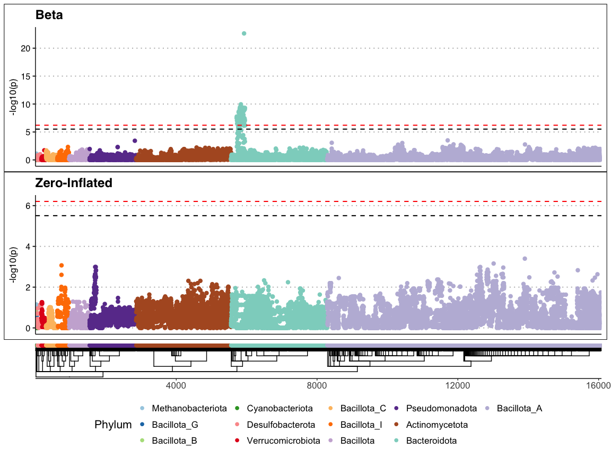
plot_volcano(fit_zib_99_c1, label = T)## Found 16081 tophits for spikedTRUE at alpha = 1 using holm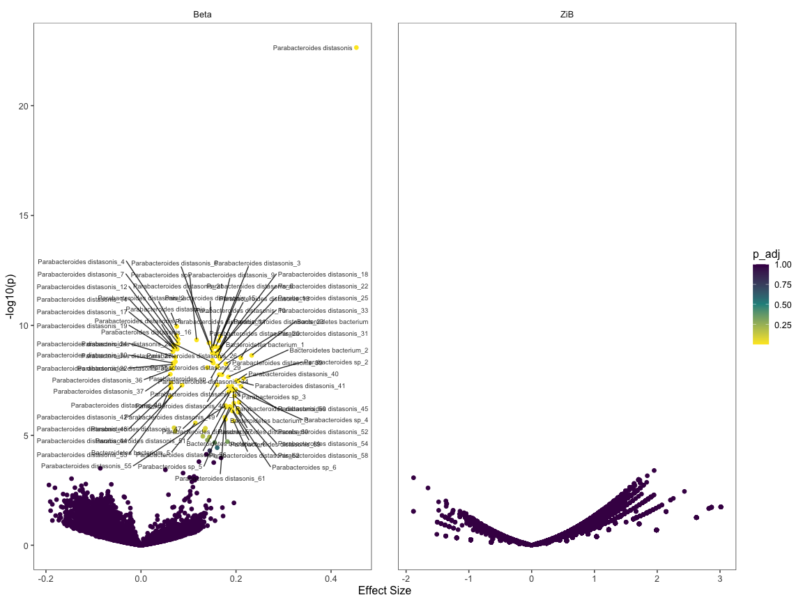
plot_ani_dist(d_q99, phenotype = 'spiked', contigs = th_c1$Contig_name[1:5], contig_names = th_c1$Genome_file[1:5])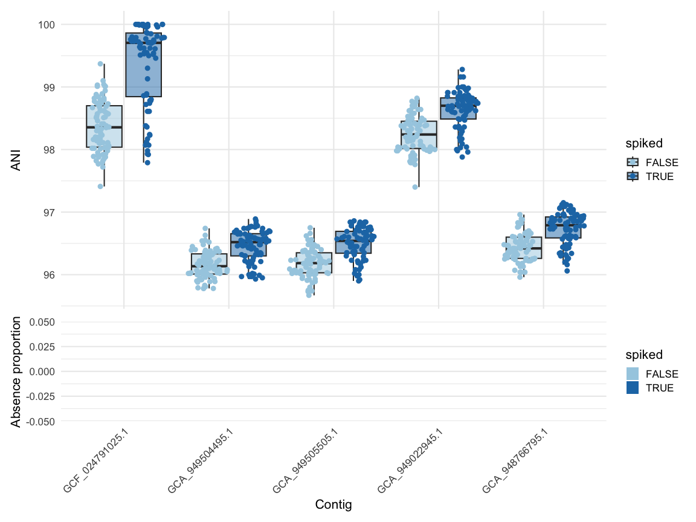
# Parabacteroides distasonis is in all samples, so, this can only be a beta hit!
# GCF_024791025.1 is the top hit - it is the spiked strain. And for the spiked samples, the ANI is 100%query 99, cov3x
# baseline false samples and higher coverage ones
rm_idx = c(sapply(ss, function(x) which(colnames(d_q99) %in% x)), grep("_sx1", colnames(d_q99)), grep("_sx5", colnames(d_q99)))
d_q99_test = d_q99[,-rm_idx]
dim(d_q99_test)## [1] 16081 100# These 20 are spiked ata coverage of 3x
table(d_q99_test@colData$spiked) ##
## FALSE TRUE
## 80 20save_path = "output_rds/spike_pdis_zib_q_99_cov3x.rds"
if(file.exists(save_path)){
fit_zib_99_c3 <- readRDS(save_path)
} else {
system.time({
ebp = compute_eb_priors(d_q99_test, design, nthreads = parallel::detectCores())
fit_zib_99_c3 <- glmZiBFit(d_q99_test, design, nthreads = parallel::detectCores(), MAP_prior = ebp)
})
saveRDS(fit_zib_99_c3, save_path)
}
th_c3 = strainspy:::add_tax2tophits(top_hits(fit_zib_99_c3), tax_99)## Found 91 tophits for spikedTRUE at alpha = 0.05 using holm# All 91 hits from the same species
table(th_c3$Species)##
## Parabacteroides distasonis Parabacteroides distasonis_A
## 70 21plot_manhattan(fit_zib_99_c3, taxonomy = tax_99, method = "BH", tax_levels = c("Order", "Phylum", "Genus", "Species"))## ! # Invaild edge matrix for <phylo>. A <tbl_df> is returned.
## ! # Invaild edge matrix for <phylo>. A <tbl_df> is returned.
## ! # Invaild edge matrix for <phylo>. A <tbl_df> is returned.
## ! # Invaild edge matrix for <phylo>. A <tbl_df> is returned.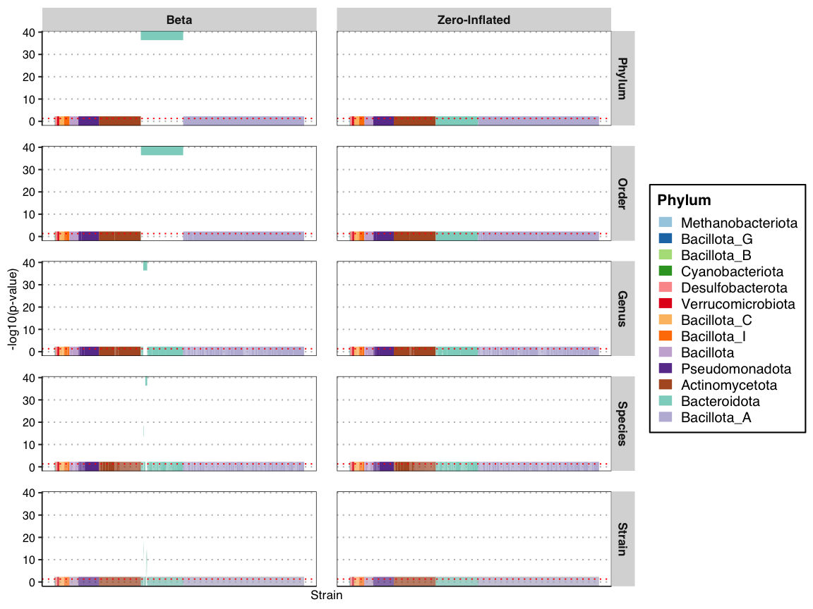
plot_manhattan(fit_zib_99_c3, taxonomy = tax_99, aggregate_by_taxa = F)## ! # Invaild edge matrix for <phylo>. A <tbl_df> is returned.
## ! # Invaild edge matrix for <phylo>. A <tbl_df> is returned.
## ! # Invaild edge matrix for <phylo>. A <tbl_df> is returned.
## ! # Invaild edge matrix for <phylo>. A <tbl_df> is returned.
## ! # Invaild edge matrix for <phylo>. A <tbl_df> is returned.
## ! # Invaild edge matrix for <phylo>. A <tbl_df> is returned.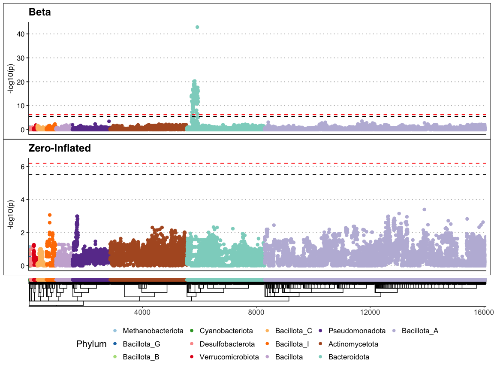
plot_volcano(fit_zib_99_c3, label = T)## Found 16081 tophits for spikedTRUE at alpha = 1 using holm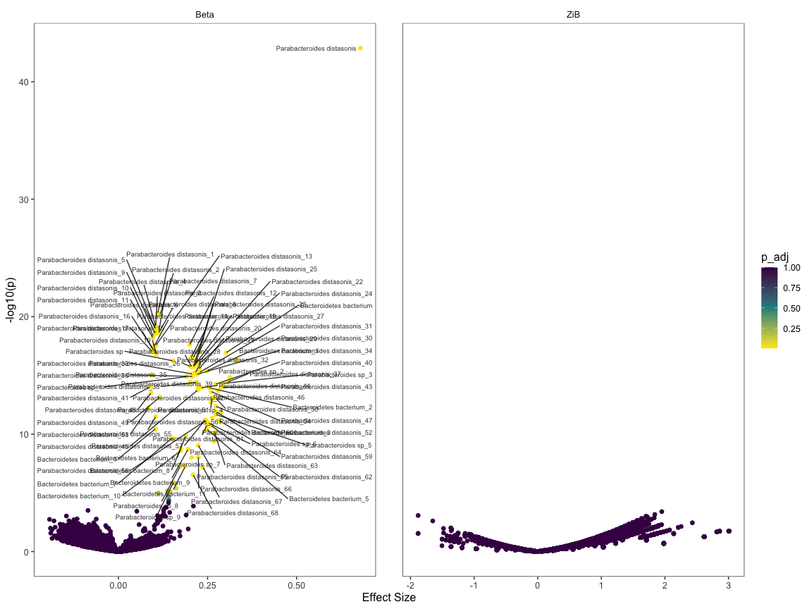
plot_ani_dist(d_q99, phenotype = 'spiked', contigs = th_c3$Contig_name[1:5], contig_names = th_c3$Genome_file[1:5])# Parabacteroides distasonis is in all samples, so, this can only be a beta hit!
# GCF_024791025.1 is the top hit - it is the spiked strain. And for the spiked samples, the ANI is 100%query 99, cov5x
# baseline false samples and higher coverage ones
rm_idx = c(sapply(ss, function(x) which(colnames(d_q99) %in% x)), grep("_sx1", colnames(d_q99)), grep("_sx3", colnames(d_q99)))
d_q99_test = d_q99[,-rm_idx]
dim(d_q99_test)## [1] 16081 100# These 20 are spiked ata coverage of 3x
table(d_q99_test@colData$spiked) ##
## FALSE TRUE
## 80 20save_path = "output_rds/spike_pdis_zib_q_99_cov5x.rds"
if(file.exists(save_path)){
fit_zib_99_c5 <- readRDS(save_path)
} else {
system.time({
ebp = compute_eb_priors(d_q99_test, design, nthreads = parallel::detectCores())
fit_zib_99_c5 <- glmZiBFit(d_q99_test, design, nthreads = parallel::detectCores(), MAP_prior = ebp)
})
saveRDS(fit_zib_99_c5, save_path)
}
th_c5 = strainspy:::add_tax2tophits(top_hits(fit_zib_99_c5), tax_99)## Found 78 tophits for spikedTRUE at alpha = 0.05 using holm# All 91 hits from the same species
table(th_c5$Species)##
## Parabacteroides distasonis Parabacteroides distasonis_A
## 57 21plot_manhattan(fit_zib_99_c5, taxonomy = tax_99, method = "BH", tax_levels = c("Order", "Phylum", "Genus", "Species"))## ! # Invaild edge matrix for <phylo>. A <tbl_df> is returned.
## ! # Invaild edge matrix for <phylo>. A <tbl_df> is returned.
## ! # Invaild edge matrix for <phylo>. A <tbl_df> is returned.
## ! # Invaild edge matrix for <phylo>. A <tbl_df> is returned.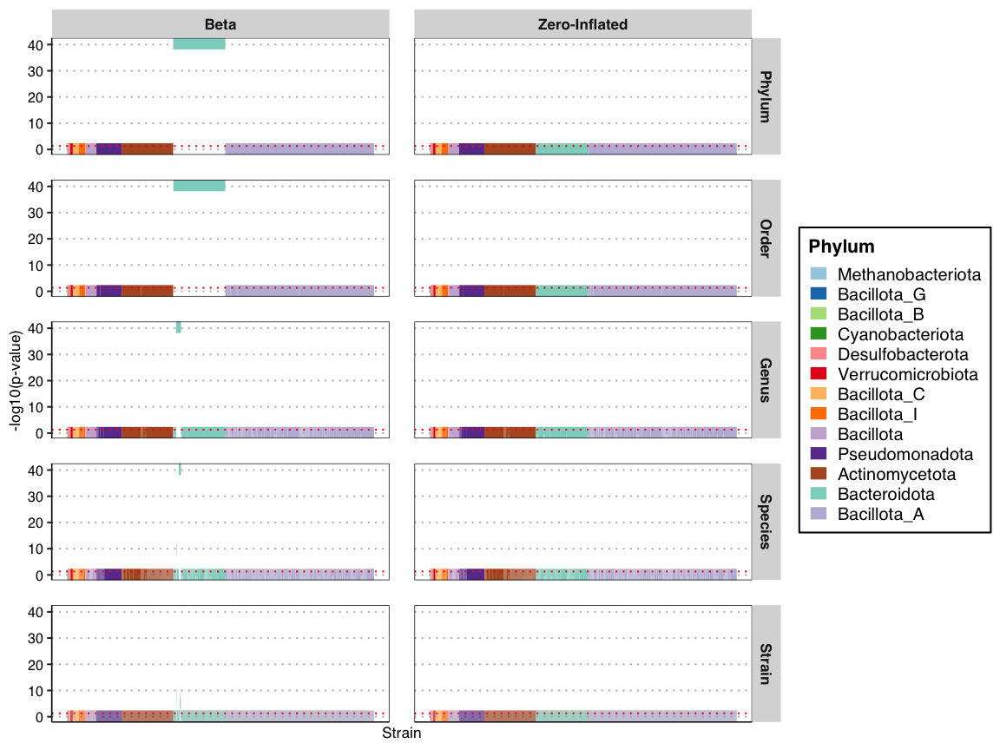
plot_manhattan(fit_zib_99_c5, taxonomy = tax_99, aggregate_by_taxa = F)## ! # Invaild edge matrix for <phylo>. A <tbl_df> is returned.
## ! # Invaild edge matrix for <phylo>. A <tbl_df> is returned.
## ! # Invaild edge matrix for <phylo>. A <tbl_df> is returned.
## ! # Invaild edge matrix for <phylo>. A <tbl_df> is returned.
## ! # Invaild edge matrix for <phylo>. A <tbl_df> is returned.
## ! # Invaild edge matrix for <phylo>. A <tbl_df> is returned.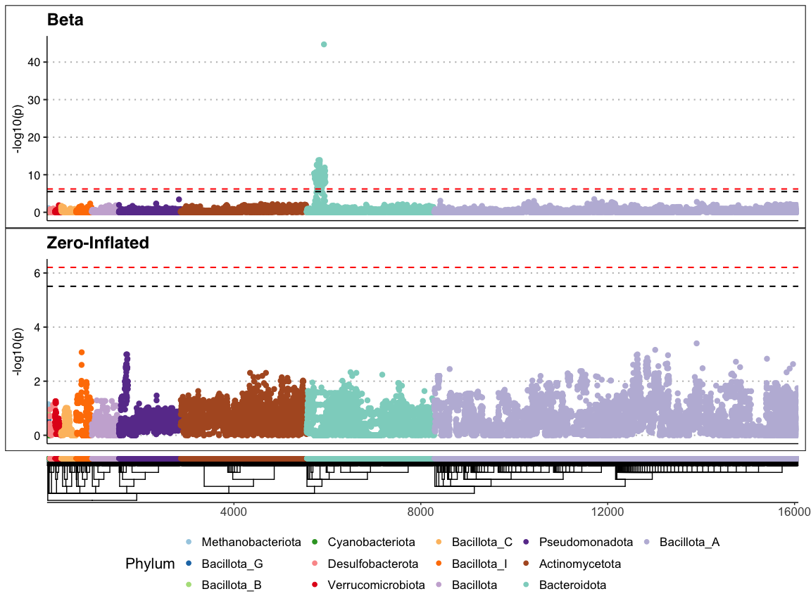
plot_volcano(fit_zib_99_c5, label = T)## Found 16081 tophits for spikedTRUE at alpha = 1 using holm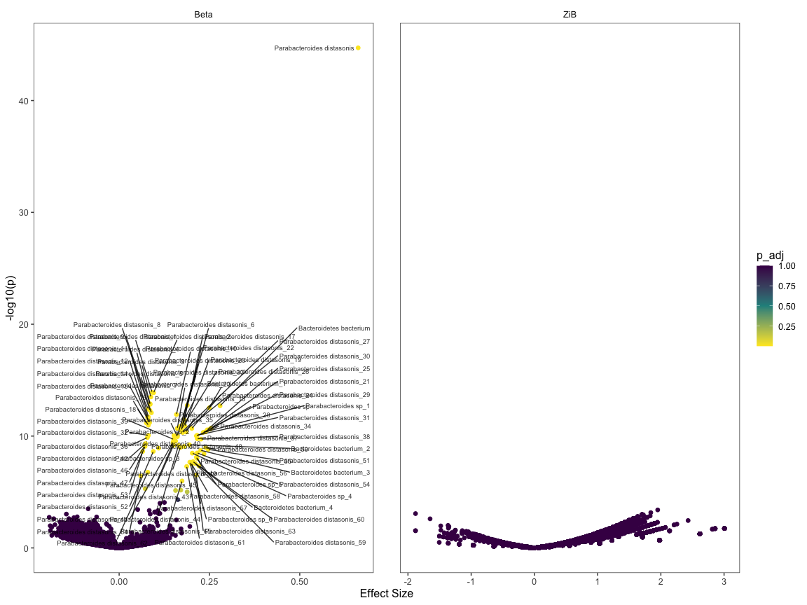
plot_ani_dist(d_q99, phenotype = 'spiked', contigs = th_c5$Contig_name[1:5], contig_names = th_c5$Genome_file[1:5])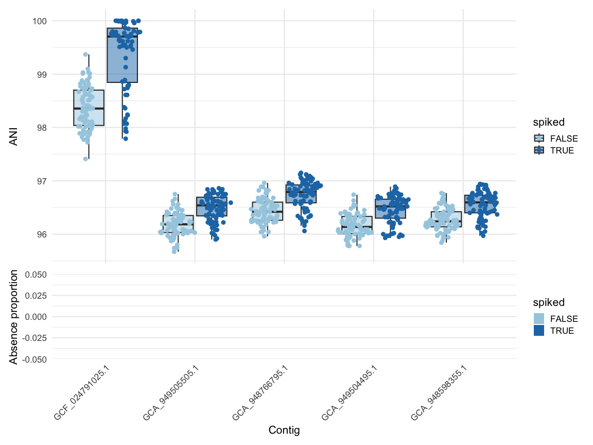
# Parabacteroides distasonis is in all samples, so, this can only be a beta hit!
# GCF_024791025.1 is the top hit - it is the spiked strain. And for the spiked samples, the ANI is 100%StrainSpy works regardless of coverage, now to test AnPan
Load data and prepare for testing
library(anpan)## • This is anpan version 0.3.0
## • Read the guide: run anpan::anpan_vignette()
## • Get help: Visit the biobakery help forum at <https://forum.biobakery.org/>
## • Parallelize: Run `future::plan()` as appropriate for your system.
## • Activate progress bars: `library(progressr); handlers(global=TRUE)`library(ape)
library(tibble)
tree = read.tree("p_distasonis_sims/spiked_tree.tre")
metadata = tibble(sample_id = tree$tip.label,
spiked = as.factor(sapply(tree$tip.label, function(x) x%in% c(ss, sub("_", "_1_", paste(ss_spikes, ".fastq", sep = "")) ))) )
table(metadata$spiked)##
## FALSE TRUE
## 64 72plot_outcome_tree(tree,
metadata,
covariates = c(),
outcome = "spiked")## Warning: `aes_string()` was deprecated in ggplot2 3.0.0.
## ℹ Please use tidy evaluation idioms with `aes()`.
## ℹ See also `vignette("ggplot2-in-packages")` for more information.
## ℹ The deprecated feature was likely used in the anpan package.
## Please report the issue to the authors.
## This warning is displayed once per session.
## Call `lifecycle::last_lifecycle_warnings()` to see where this warning was
## generated.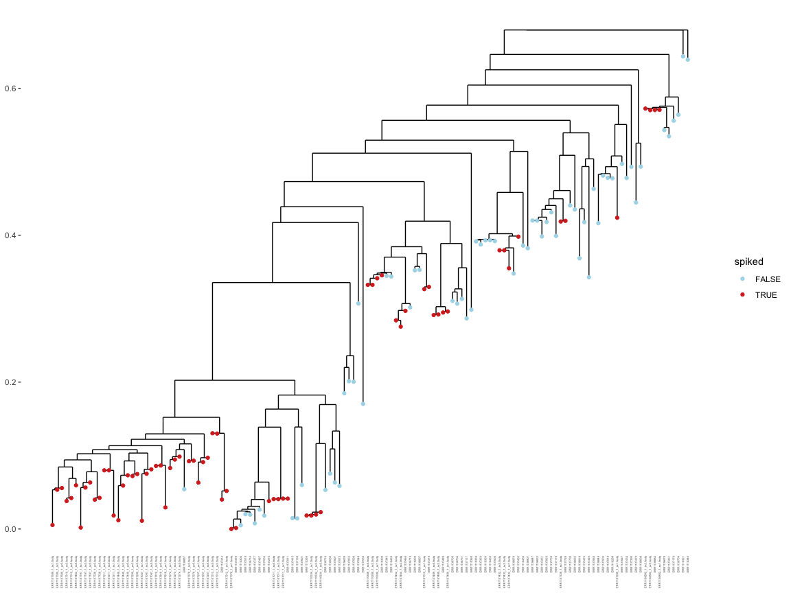
Looks like the left-most branch has a bunch of spiked ones, it’ll be interesting to see variation with coverage
anPan PGLMM
baseline (no signal)
# This simulation does not have any signal, we shouldn't detect anything!
# Subset
rm_idx = grep("_sx", metadata$sample_id)
metadata_test = metadata[-rm_idx, ]
table(metadata_test$spiked)##
## FALSE TRUE
## 64 12# Only 76/100 samples had P. dist at a detectable level for strainphlan
# These TRUE = 12 are NOT spiked in, this is just to show there is no detectable signal
# Drop the same leaves from the tree
tree_test = drop.tip(tree, metadata$sample_id[rm_idx])
plot_outcome_tree(tree_test,
metadata_test,
covariates = c(),
outcome = "spiked")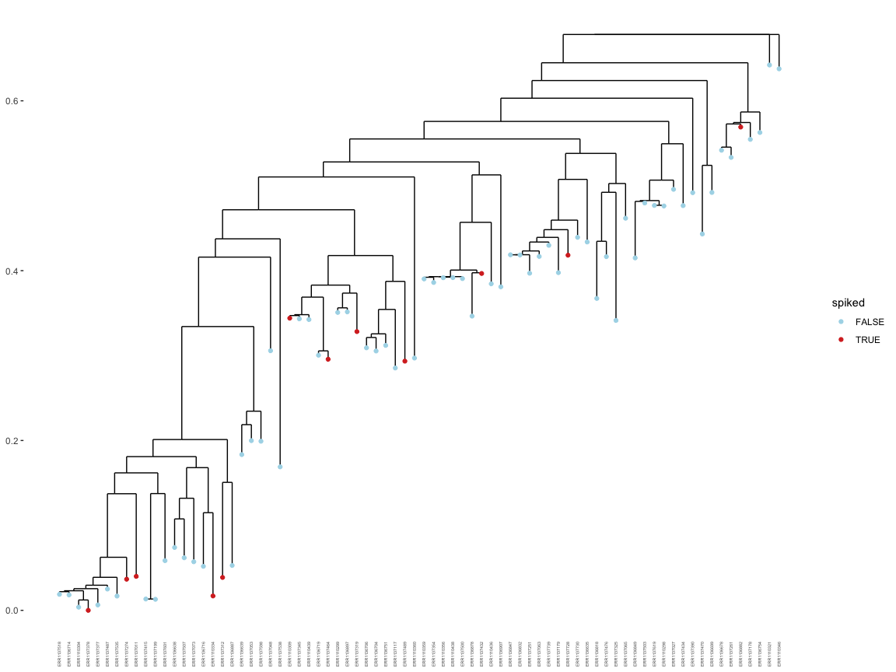
# Clearly no signal
save_path = "output_rds/spike_pdis_anpan_bl.rds"
if(file.exists(save_path)){
anpan_res_bl <- readRDS(save_path)
} else {
system.time({
anpan_res_bl = anpan_pglmm(meta_file = metadata_test,
tree_file = tree_test,
outcome = "spiked",
family = "binomial",
bug_name = "Pdis",
reg_noise = TRUE,
loo_comparison = TRUE,
run_diagnostics = FALSE,
refresh = 500,
show_plot_tree = FALSE,
show_post = FALSE)
})
saveRDS(anpan_res_bl, save_path)
}
anpan_res_bl$loo$comparison## elpd_diff se_diff elpd_loo se_elpd_loo p_loo se_p_loo
## base_fit 0.00000000 0.0000000 -34.10157 5.094281 0.855544 0.1756572
## pglmm_fit -0.09731679 0.1441665 -34.19889 5.065588 1.205773 0.2441358
## looic se_looic
## base_fit 68.20314 10.18856
## pglmm_fit 68.39777 10.13118
## attr(,"class")
## [1] "compare.loo" "matrix" "array"Clearly no signal - confirmed by PGLMM
cov1x
# Subset
rm_idx = unlist(c(sapply(ss, function(x) which(metadata$sample_id %in% x)), grep("_sx3", metadata$sample_id), grep("_sx5", metadata$sample_id)))
metadata_test = metadata[-rm_idx, ]
table(metadata_test$spiked)##
## FALSE TRUE
## 64 20# Only 20/20 spiked samples are now detected, but only non spiked are present - should be plenty
# Drop the same leaves from the tree
tree_test = drop.tip(tree, metadata$sample_id[rm_idx])
plot_outcome_tree(tree_test,
metadata_test,
covariates = c(),
outcome = "spiked")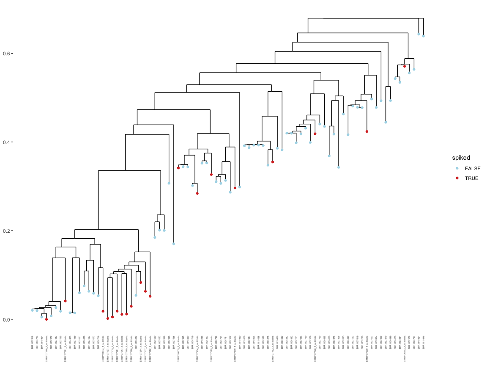
# Signal is a bit weak
save_path = "output_rds/spike_pdis_anpan_cov1x.rds"
if(file.exists(save_path)){
anpan_res_c1 <- readRDS(save_path)
} else {
system.time({
anpan_res_c1 = anpan_pglmm(meta_file = metadata_test,
tree_file = tree_test,
outcome = "spiked",
family = "binomial",
bug_name = "Pdis",
reg_noise = TRUE,
loo_comparison = TRUE,
run_diagnostics = FALSE,
refresh = 500,
show_plot_tree = FALSE,
show_post = FALSE)
})
saveRDS(anpan_res_c1, save_path)
}
anpan_res_c1$loo$comparison## elpd_diff se_diff elpd_loo se_elpd_loo p_loo se_p_loo
## pglmm_fit 0.000000 0.0000000 -45.52922 4.278753 2.1446260 0.2959159
## base_fit -1.612409 0.8160137 -47.14163 4.425549 0.9993287 0.1292906
## looic se_looic
## pglmm_fit 91.05844 8.557506
## base_fit 94.28326 8.851099
## attr(,"class")
## [1] "compare.loo" "matrix" "array"The phylogenetic model seems to fit better, but the difference doesn’t seem clear (less than 2 standard errors difference in ELPD).
cov3x
# Subset
rm_idx = unlist(c(sapply(ss, function(x) which(metadata$sample_id %in% x)), grep("_sx1", metadata$sample_id), grep("_sx5", metadata$sample_id)))
metadata_test = metadata[-rm_idx, ]
table(metadata_test$spiked)##
## FALSE TRUE
## 64 20# Only 20/20 spiked samples are now detected, but only non spiked are present - should be plenty
# Drop the same leaves from the tree
tree_test = drop.tip(tree, metadata$sample_id[rm_idx])
plot_outcome_tree(tree_test,
metadata_test,
covariates = c(),
outcome = "spiked")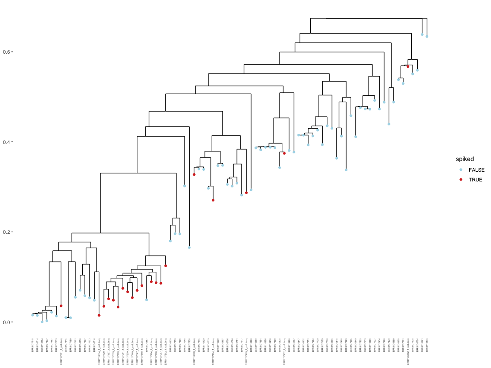
# Clearly signal is present
save_path = "output_rds/spike_pdis_anpan_cov3x.rds"
if(file.exists(save_path)){
anpan_res_c3 <- readRDS(save_path)
} else {
system.time({
anpan_res_c3 = anpan_pglmm(meta_file = metadata_test,
tree_file = tree_test,
outcome = "spiked",
family = "binomial",
bug_name = "Pdis",
reg_noise = TRUE,
loo_comparison = TRUE,
run_diagnostics = FALSE,
refresh = 500,
show_plot_tree = FALSE,
show_post = FALSE)
})
saveRDS(anpan_res_c3, save_path)
}
anpan_res_c3$loo$comparison## elpd_diff se_diff elpd_loo se_elpd_loo p_loo se_p_loo looic
## pglmm_fit 0.000000 0.000000 -38.39092 3.918328 2.993786 0.4993756 76.78183
## base_fit -8.657758 2.351852 -47.04867 4.399150 0.902703 0.1160073 94.09735
## se_looic
## pglmm_fit 7.836656
## base_fit 8.798300
## attr(,"class")
## [1] "compare.loo" "matrix" "array"The phylogenetic model seems to fit better, and the difference seems clear (more than 2 standard errors difference in ELPD).
cov5x
# Subset
rm_idx = unlist(c(sapply(ss, function(x) which(metadata$sample_id %in% x)), grep("_sx1", metadata$sample_id), grep("_sx3", metadata$sample_id)))
metadata_test = metadata[-rm_idx, ]
table(metadata_test$spiked)##
## FALSE TRUE
## 64 20# Only 20/20 spiked samples are now detected, but only non spiked are present - should be plenty
# Drop the same leaves from the tree
tree_test = drop.tip(tree, metadata$sample_id[rm_idx])
plot_outcome_tree(tree_test,
metadata_test,
covariates = c(),
outcome = "spiked")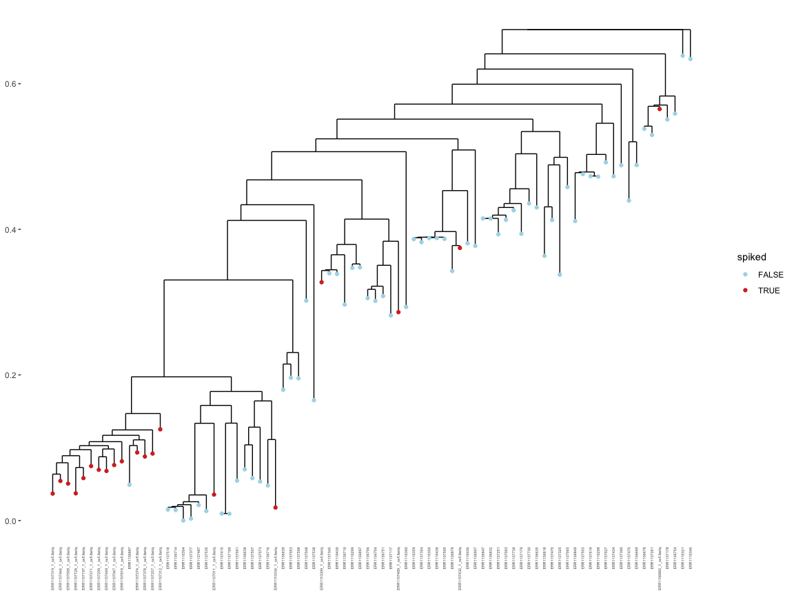
# Clearly dominant signal
save_path = "output_rds/spike_pdis_anpan_cov5x.rds"
if(file.exists(save_path)){
anpan_res_c5 <- readRDS(save_path)
} else {
system.time({
anpan_res_c5 = anpan_pglmm(meta_file = metadata_test,
tree_file = tree_test,
outcome = "spiked",
family = "binomial",
bug_name = "Pdis",
reg_noise = TRUE,
loo_comparison = TRUE,
run_diagnostics = FALSE,
refresh = 500,
show_plot_tree = FALSE,
show_post = FALSE)
})
saveRDS(anpan_res_c5, save_path)
}
anpan_res_c5$loo$comparison## elpd_diff se_diff elpd_loo se_elpd_loo p_loo se_p_loo looic
## pglmm_fit 0.00000 0.000000 -36.09019 3.860277 2.839414 0.5063496 72.18038
## base_fit -11.05142 2.735972 -47.14161 4.429170 1.000522 0.1284311 94.28322
## se_looic
## pglmm_fit 7.720554
## base_fit 8.858339
## attr(,"class")
## [1] "compare.loo" "matrix" "array"The phylogenetic model seems to fit better, and the difference seems clear (more than 2 standard errors difference in ELPD).
AnPan works as well - when there is signal in the phylogeny, it can detect it accurately. However, building the tree can be tricky if the strain coverage is low. StrainSpy can work equally well in the lower coverage simulations as well, without requiring a phylogeny.
Figure for paper
library(ggplot2)
library(dplyr)##
## Attaching package: 'dplyr'
## The following object is masked from 'package:ape':
##
## where
## The following objects are masked from 'package:stats':
##
## filter, lag
## The following objects are masked from 'package:base':
##
## intersect, setdiff, setequal, unionlibrary(ggrepel)
# strainspy result
spike = "GCF_024791025.1"
th_plt = rbind(cbind(th_c1, coverage = "x1"),
cbind(th_c3, coverage = "x3"),
cbind(th_c5, coverage = "x5"))
th_plt[nrow(th_plt)+1, ] = th_plt[nrow(th_plt),]
# manually add the baseline hits (there are none!)
th_plt$coefficient[nrow(th_plt)] = 0
th_plt$p_adjust[nrow(th_plt)] = 1
th_plt$coverage[nrow(th_plt)] = "Null"
th_plt$Contig_name[nrow(th_plt)] = ""
th_plt$neglog_p = -log10(th_plt$p_adjust)
label_df <- th_plt %>%
group_by(coverage) %>%
arrange(p_adjust, .by_group = TRUE) %>%
slice_head(n = 5) %>%
ungroup()
# No label needed for the fake point
rmidx = which(label_df$coverage == "Null")
if(length(rmidx) > 0) label_df = label_df[-rmidx, ]
top1 <- th_plt %>%
group_by(coverage) %>%
arrange(p_adjust) %>%
slice(1)
ggplot(th_plt, aes(x = coefficient, y = neglog_p)) +
geom_point(
data = subset(th_plt, Genome_file != spike),
aes(color = "other"),
size = 1,
alpha = 0.5
) +
geom_point(
data = subset(th_plt, Genome_file == spike),
color = "red",
size = 2.5,
stroke = 1.2
) +
geom_text_repel(
data = label_df,
aes(label = Genome_file),
size = 4.5,
fontface = "bold",
box.padding = 0.4,
point.padding = 0.3,
segment.color = "grey50",
max.overlaps = Inf
) +
scale_color_manual(values = c("grey70", "red")) +
facet_wrap(~coverage, nrow = 1) +
theme_classic() +
labs(
x = "Effect size (coefficient)",
y = expression(-log[10](adjusted~p))
) +
guides(color = "none") +
geom_vline(xintercept = 0, linetype = "dashed", alpha = 0.3) +
geom_hline(yintercept = -log10(0.05), linetype = "dashed", alpha = 0.3) +
theme_classic(base_size = 16) +
theme(
strip.background = element_rect(fill = "grey95"),
strip.text = element_text(face = "bold"),
panel.spacing = unit(1, "lines")
)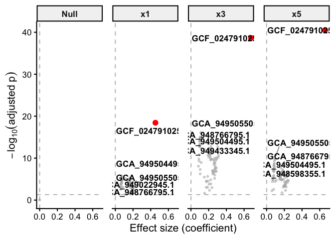
# anpan result
## Null model
rm_idx = rm_idx = grep("_sx", metadata$sample_id)
metadata_test = metadata[-rm_idx, ]
# Drop the same leaves from the tree
tree_test = drop.tip(tree, metadata$sample_id[rm_idx])
tp_null = plot_outcome_tree(tree_test,
metadata_test,
covariates = c(),
outcome = "spiked", return_tree_df = T)
tp_null$tree_plot + theme_classic(base_size = 16) +
theme(
axis.text.x = element_blank(),
axis.ticks.x = element_blank()
)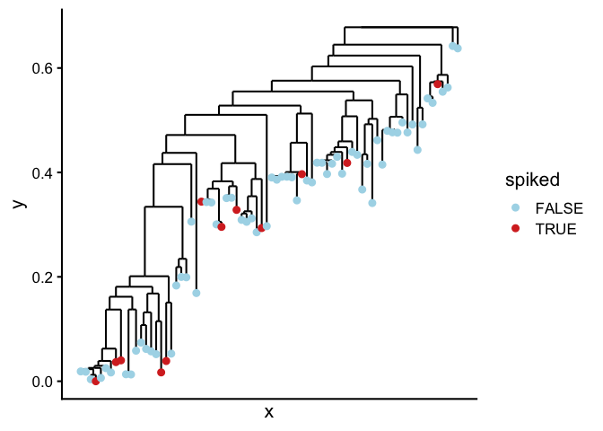
## Coverage 1
rm_idx = unlist(c(sapply(ss, function(x) which(metadata$sample_id %in% x)), grep("_sx3", metadata$sample_id), grep("_sx5", metadata$sample_id)))
metadata_test = metadata[-rm_idx, ]
# Drop the same leaves from the tree
tree_test = drop.tip(tree, metadata$sample_id[rm_idx])
tp1 = plot_outcome_tree(tree_test,
metadata_test,
covariates = c(),
outcome = "spiked", return_tree_df = T)
tp1$tree_plot + theme_classic(base_size = 16) +
theme(
axis.text.x = element_blank(),
axis.ticks.x = element_blank()
)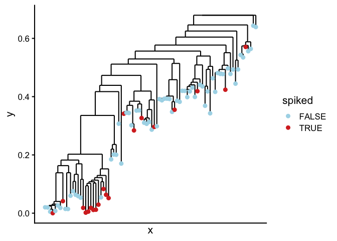
## Coverage 3
rm_idx = unlist(c(sapply(ss, function(x) which(metadata$sample_id %in% x)), grep("_sx1", metadata$sample_id), grep("_sx5", metadata$sample_id)))
metadata_test = metadata[-rm_idx, ]
# Drop the same leaves from the tree
tree_test = drop.tip(tree, metadata$sample_id[rm_idx])
tp3 = plot_outcome_tree(tree_test,
metadata_test,
covariates = c(),
outcome = "spiked", return_tree_df = T)
tp3$tree_plot + theme_classic(base_size = 16) +
theme(
axis.text.x = element_blank(),
axis.ticks.x = element_blank()
)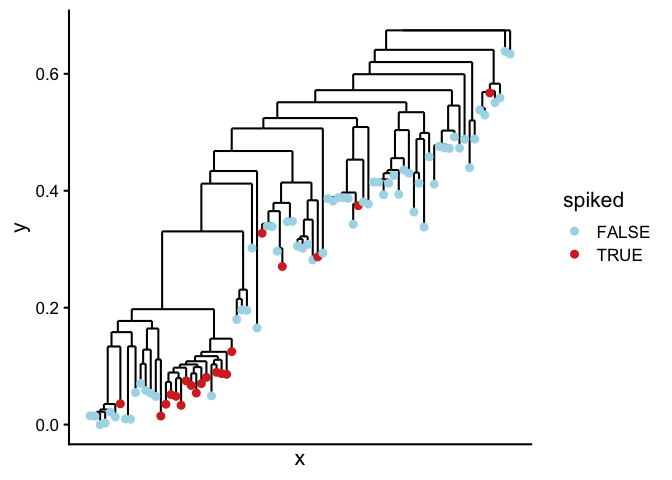
## Coverage 5
rm_idx = unlist(c(sapply(ss, function(x) which(metadata$sample_id %in% x)), grep("_sx1", metadata$sample_id), grep("_sx3", metadata$sample_id)))
metadata_test = metadata[-rm_idx, ]
# Drop the same leaves from the tree
tree_test = drop.tip(tree, metadata$sample_id[rm_idx])
tp5 = plot_outcome_tree(tree_test,
metadata_test,
covariates = c(),
outcome = "spiked", return_tree_df = T)
tp5$tree_plot + theme_classic(base_size = 16) +
theme(
axis.text.x = element_blank(),
axis.ticks.x = element_blank()
)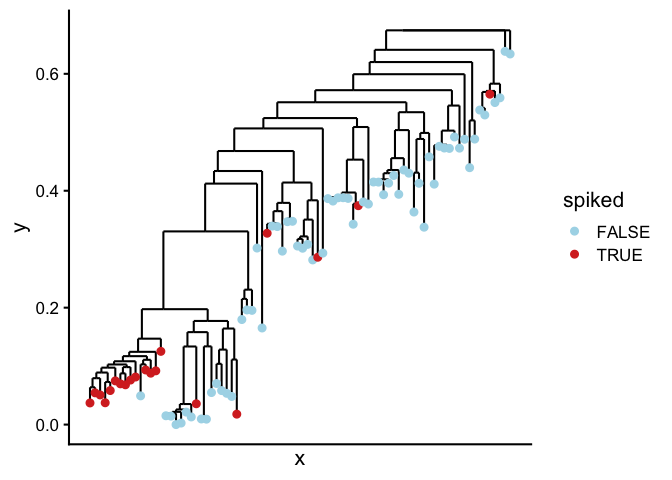
# Results summary plot
anpan_summary <- tibble(
coverage = c("Null", "x1", "x3", "x5"),
elpd_diff = -c(
anpan_res_bl$loo$comparison["pglmm_fit", "elpd_diff"],
anpan_res_c1$loo$comparison["base_fit", "elpd_diff"],
anpan_res_c3$loo$comparison["base_fit", "elpd_diff"],
anpan_res_c5$loo$comparison["base_fit", "elpd_diff"]
),
se_diff = c(
anpan_res_bl$loo$comparison["pglmm_fit", "se_diff"],
anpan_res_c1$loo$comparison["base_fit", "se_diff"],
anpan_res_c3$loo$comparison["base_fit", "se_diff"],
anpan_res_c5$loo$comparison["base_fit", "se_diff"]
)
) %>%
mutate(
abs_elpd = abs(elpd_diff),
z_score = abs_elpd / se_diff
)
anpan_summary$coverage <- factor(anpan_summary$coverage,
levels = c("Null", "x1","x3","x5"))
anpan_summary <- anpan_summary %>%
mutate(
x = as.numeric(coverage),
signal = abs(elpd_diff) / se_diff
)
ggplot(anpan_summary, aes(x = x, y = elpd_diff, group = 1)) +
# uncertainty
geom_errorbar(
aes(
ymin = elpd_diff - se_diff,
ymax = elpd_diff + se_diff
),
width = 0.1
) +
# trajectory
geom_line(linewidth = 1) +
# points
geom_point(size = 4) +
# reference line
geom_hline(yintercept = 0, linetype = "dashed") +
# threshold (your rule)
geom_hline(yintercept = 2, linetype = "dotted", color = "red") +
scale_x_continuous(
breaks = 1:4,
labels = c("Null", "1x","3x","5x")
) +
theme_classic(base_size = 16) +
labs(
x = "Coverage",
y = expression(Delta~ELPD~abs(phylogeny - base))
)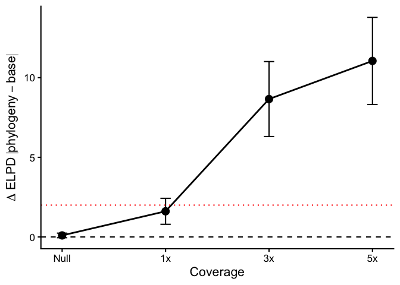